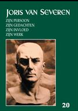

> nieuwsbrief > Jg. 20 - nr 3 - 2016
Inhoud
Hernieuwen ledenbijdrage voor 2016
De
hernieuwing van de ledenbijdragen voor 2016 verliep
traditiegetrouw vlot. Wat volgt is dus eerder bestemd voor de
achterblijvers die op hun adresetiket geen *-symbool boven hun
naam vinden. Bij wijze van herinnering vinden alleen zij
andermaal een overschrijvingsformulier als bijlage bij dit
nummer. Even herinneren: de minimumbijdrage bleef ongewijzigd en
bedraagt 29 . In ruil daarvoor verzekeren we u andermaal de
stipte toe-zending van het nieuwe Jaarboek Joris van Severen
het 20e al in de meimaand en van de vier nummers van ons
kwartaalblad Nieuws-brief
Joris van Severen. Vanaf het bedrag van 35 boeken we u
met dank als steunend lid. Vereffening graag via onze rekening
IBAN: BE71 0001 7058 1469 BIC: BPOTBEB1 t.n.v. Studiecentrum
Joris van Severen, Paddevijverstraat 2, 8900 Ieper.
Herdenkingen
mei 2016
Omtrent de
herdenkingsplechtigheden van dit jaar Eucharistieviering op 21
mei in de Blindekenskapel te Brugge op zaterdag 21 mei en het
bezoek aan het graf te Abbeville op zondag 22 mei, ingericht
door de Stichting Joris
van Severen leest u verderop in deze Nieuwsbrief méér.
Daarbij is het ons niet te doen om een nauwgezet journalistiek
verslag maar veeleer om het oproepen van de sfeer die deze
plechtigheden bezielden.
Ten geleide bij het Jaarboek Joris van Severen 2016

Met deze aflevering zijn we
aan het 20e Jaarboek Joris van
Severen toe. Overlopen we even de ook dit
keer wel zeer gevarieerde inhoud: In het vorige jaarboek
brachten we postuum een bijdrage van Luc Delafortrie rond de
omstandigheden die geleid hebben tot het einde van het Verdinaso
in mei 1941. Twee dochters van Emiel Thiers Hilde en
Lutgart - ergerden zich niet zonder reden aan de
toonzetting van dat stuk. Aan de hand van hun toenmalige
dagboeknotities zetten ze een en ander in dat verhaal omtrent Het einde van het
Verdinaso recht.
In de aanloop tot ons
jongste colloquium gaf de pers andermaal overvloedig blijk van
haar gebrek aan historische kennis en onbegrip inzake de
persoonlijkheid van Joris van Severen en het streven van het
Verdinaso: de inhoudsloosheid van het fascisme als
container-begrip vierde daarbij hoogtij. Maurits Cailliau
doet in Fascisme und kein Ende?
een poging om aan dit kennistekort te verhelpen en Van Severen
en zijn beweging te situeren waar ze thuishoren en dit mede op
basis van de plaatsbepalingen die Joris van Severen zelf klaar
en duidelijk verwoordde. Zoals een van onze auteurs het in zijn
bijdrage stelt was er in de beginperiode van het Verdinaso
ongetwijfeld enige fascinatie voor het fascisme evenwel nooit
identificatie! doch vanaf 1934 werd ondubbelzinnig geopteerd
voor een Heel-Nederlands revolutionair conservatisme, dat zich
veeleer als een tegenpool ontwikkelde ten overstaan van het
fascisme en het nationaalsocialisme.
Daarop aansluitend toont Ruud
Bruijns in De Dinaso-militie in
het historisch perspectief van het interbellum
aan dat de militante politieke vormentaal inzake actie en
agitatie in die jaren allesbehalve het kenmerk was van rechtse
bewegingen en men veeleer dient te spreken van een
gemeenschappelijke stijl van de jaren dertig die zowel links
als rechts het straatbeeld domineerde.
Dezelfde auteur brengt met
zijn bijdrage Joris van Severen en
Nederland een noodzakelijke
inleiding tot de erop volgende uitgebreide studie. Van Severens
eerste reizen naar het Noorden hadden in de eerste plaatst tot
doel zijn oude vriendschapsbanden met verbannen frontkameraden
aan te halen; eerst in latere jaren kwam Nederland als deel van
de Nederlanden in zijn blikveld.
Michiel Wallaard wijdde
zijn bachelor-scriptie als historicus aan In de ban van Joris van Severen Ernest Michel, Henri
Bruning en Ernst Voor-hoeve. In overleg
met de auteur kan onze jaarboekredactie deze scriptietekst
enigszins ingekort, tot een al met al nog lijvige
jaar-boekbijdrage, publiceren. Het belang en de rol van deze
drie Nederlandse Dinasos hoeft geen betoog. Meteen vernemen we
tussendoor heel wat omtrent de Nederlandse Dinaso-scene en de
rol die de sublieme deserteur Carlos van Sante daarbij
gespeeld heeft.
Jaren geleden herinnerde
Hector de Bruyne onder pseudoniem H. van Becke aan de voorname
rol die Joris van Severen gespeeld heeft. In Memoriam voor een
leider is een eerder summiere beschouwing
die het verdient aan de vergetelheid onttrokken te worden.
Hetzelfde geldt ook voor
het korte opstel Omtrent Jan Ryckoort
van Maurits Cailliau. Over de levensloop
van Ryckoort en de rol die hij binnen het Verdinaso gespeeld
heeft is overigens het laatste woord nog niet gezegd.
In het Jaarboek Joris van Severen
van 2001 lazen we de schriftelijke neerslag van Bart de Wevers
referaat op ons 2e colloquium, dat hij de titel De lange schaduw van de
Leider meegegeven had. Dat hij daarmee niet alles gezegd
of geïnventariseerd had moge blijken uit de omvangrijke studie
van Filip Martens over De verloren erfenis van
het Verdinaso Een overzichtsgeschiedenis van het
naoorlogse Heel-Neerlandisme en solidarisme.
Ook deze jaarboekaflevering
sluit traditiegetrouw af met een gedicht, dit keer van de hand
van de Aleidis Dierick en opgedragen aan haar vader
Dinaso Renaat Verbruggen.
__________________
N.a.v.
Jaarboek Joris van Severen 20 (2016).
Gen., ill., 208 pp., ISBN 9789076057187, 29 (ledenbijdrage),
of 35 (niet-leden).
Zie ook: http://doorbraak.be/nl/joris-van-severen-und-kein-ende
Als vierde naam onder de
Brugse slachtoffers van het bloedbad van Abbeville op 20 mei
1940, vinden we in de alfabetische volgorde op de gedenksteen
hierbij de naam van Joris van Severen terug. Treffend hierbij is
wel dat de gedenksteen aangebracht is in de toegangspoort tot
zijn toenmalige woning, het Cruyce van Bourgonje.
Eerder werd hier al
herinnerd aan het levenslot van de drie andere Bruggelingen;
Louis Caestecker, Maria Ceuterick en Jan Ryckoort. Vandaag is
daarom enige toelichting bij de vierde naam, deze van Joris van
Severen aan de orde.
Hij
Joris van Severen - werd op 19 juli
Na zijn middelbare studies
laat hij zich In 1912 inschrijven aan de universiteit van Gent,
faculteit Letteren en Wijsbegeerte, voorbereidend op de rechten.
Hij is er zeer actief in het Vlaamse studentenleven en als
medeorganisator van de Groot-Nederlandse studentencongressen.
Bij het begin van de oorlog
1914-1918 wordt hij opgeroepen voor het leger en staat hij
weldra als sergeant aan het front. Hij is zeer begaan met het
lot van de Vlaamse soldaten en vertegenwoordigt weldra de IIIe
legerdivisie in de geheime Frontbeweging. Eens officier staakt
hij die activiteit niet. Dit kost hem strafkamp en degradatie.
Maar op eigen aanvraag staat hij tegen het eindoffensief weer
aan het front. Gedurende die frontjaren hield hij een omvangrijk
dagboek bij dat eerst in 2005 gepubliceerd werd onder de titel Die vervloekte oorlog.
Na de oorlog hervat Joris
van Severen zijn studies te Gent maar wijdt hij zich in
hoofdzaak aan de Vlaamse strijd en aan de uitgave van Ter
Waarheid, een maandblad met internationale allures. Op
aandringen van Cyriel Verschaeve neemt hij in 1921 voor de Frontpartij
deel aan de parlementsverkiezingen en wordt tot
volksvertegenwoordiger verkozen; wat hij tot 1929 blijft. Hij is
op dat ogenblik de jongste volksvertegenwoordiger in het
parlement.
Intussen is hij vooral in
West-Vlaanderen actief als hoofdman van het Katholiek Vlaams
Nationaal Verbond en uitgever van het weekblad De
West-Vlaming. Bij iedere evolutie binnen het
Vlaams-nationaal leven is hij betrokken en verdedigt hij zijn
persoonlijke visie.
Die persoonlijke visie
oversteeg al vlug de beperkte kijk van zijn flamingantische
strijdgenoten. Enerzijds laat hij het klaagmuur-flamingantisme
achter zich en bepleit hij een toekomst in Groot-Nederlands
(Vlaanderen en Nederland) perspectief, en anderzijds werkt hij
aan een maatschappelijk sociaal project gebaseerd op de
katholieke wereldbeschouwing de encyclieken Rerum Novarum en Quadragesimo Anno
gericht op de hervorming van de samenleving op solidaristische
en corporatistische grondslagen. Dit brengt hem in conflict met
andere vooraanstaanden in de Vlaamse Beweging aan wie het
volgens hem aan visie ontbreekt.
Uiteindelijk gaat hij in
oktober 1931 een eigen weg met de oprichting van het Verdinaso
(Verbond van Dietse Nationaal-Solidaristen) dat
aanvankelijk Groot-Nederlands, op taalbasis zoals we zagen in
1934 evolueert naar een Heel-Nederlandse staatsvisie, gebaseerd
op de geschiedenis van de 17 Provincies (de huidige
Benelux-landen) en een alsmaar steviger onderbouwde
solidaristische maatschappelijke ordening, teneinde een einde te
maken aan de klassenstrijd. Deze evolutie leidde ertoe dat het Verdinaso ook in
Nederland enthousiaste medewerking kreeg en ook daar afdelingen
ontstonden.
Op het terrein van de
sociale gemeenschapsopbouw bleef de leer van het solidarisme
zoals al gezegd, ontleend aan de pauselijke encyclieken Rerum Novarum en Quadragesimo Anno
voor en na van kracht. De opbouw van een organische democratie -
gesymboliseerd in het Verdinaso-embleem met ploeg, rad en zwaard
beoogde een derde weg
te banen tussen enerzijds het ongebreidelde liberalisme en
anderzijds de totalitaire tendensen van het marxisme. De
volksgemeenschap werd daarbij als een organisch gegeven gezien,
waarvan alle organen de standen solidair dienden samen te
werken tot nut van het geheel van de gemeenschap. De idee van
het corporatisme, die toen alom in de belangstelling stond, kon
daarvoor de structuurelementen leveren. Van Severen koos daarmee
voor een maatschappelijk harmoniemodel tussen de diverse sociale
geledingen.
Met dit totaalconcept op
nationaal en sociaal gebied - nam hij in feite helemaal afscheid
van het flamingantisme dat voortaan in hem een tegenstrever zag.
Het bracht hem en zijn beweging anderzijds wel toenadering tot
lucide geesten in Nederland en in het Franstalige landsgedeelte,
waar zowel zijn nationale als zijn sociale visies beaming vonden
binnen elitaire kringen. Ook in Wallonië ontstonden daardoor
afdelingen van het Verdinaso.
Niettegenstaande zijn toen
sinds jaren al loyaal geworden houding tegenover België, zijn
fel en onverpoosd bepleiten van de neutraliteitspolitiek van
Koning Leopold III en de instructies aan zijn volgelingen om te
strijden tegen iedere aanvaller en de besten onder de helm te
zijn zoals hij zijn militanten voorhield - werd hij bij het
uitbreken van de Tweede Wereldoorlog als "staatsgevaarlijk"
aangehouden en naar Frankrijk weggevoerd. Te Abbeville werd hij,
bij een poging een einde te stellen aan de moord op zijn
lotgenoten, zelf neergeschoten. Daar ligt hij begraven naast de
arbeider Jan Ryckoort, zijn medewerker, samen met hem vermoord
op 20 mei 1940.
Joris van Severen en zijn
beweging kwamen reeds in talrijke historische werken aan bod.
Rond zijn leven en werken bestaat bovendien een jaarboekenreeks
waarvan tot nog toe 20 delen, waaronder zijn oorlogsdagboek en
een grote fotobiografie, verschenen zijn. Aan zijn
persoonlijkheid kan noch de Vlaamse, noch de Belgische
geschiedenis stilzwijgend voorbij gaan. Hij is en blijft een
bezielende politieke figuur met een betekenisvolle inhoud.
In feite kan men met gerust
gemoed stellen dat, wanneer het bloedbad te Abbeville van 20 mei
1940 thans nog onuitroeibaar in het collectieve geheugen leeft,
dit zijn oorzaak vindt in het feit dat Joris van Severen zich
onder de slachtoffers ervan bevond. Zonder hem zou dit bloedbad
als een van de vele te betreuren oorlogsmisdaden de geschiedenis
zijn ingegaan. Thans blijft dit ook voor wat de andere
Bruggelingen betreft een gegeven waaraan door het Abbeville Comité
terecht jaarlijks aandacht besteed wordt en waardoor hun vier
namen blijvend aan de vergetelheid ontrukt zijn geworden. (MC
& LS)
E. H. Gijs
van Ryckeghem
Het leven van elke mens is
een opdracht: een zoektocht naar de zin van het bestaan en een
steeds hernieuwde inzet om te leven volgens je diepste
overtuiging. Joris van Severen die wij vandaag in het bijzonder
herdenken heeft in droom en daad, tot de dood toe, in rusteloos
zoeken soms, naar zijn diepste overtuiging geleefd. De kracht om
dat te kunnen heeft hij, zo weten we uit zijn geschriften,
vooral in zijn christelijk geloof gevonden. Wij Christenen
vieren vandaag het feest van de H. Drie-eenheid. Wij geloven dat
God Schepper en Vader is, die ons dag aan dag liefdevol in het
leven houdt. Wij geloven dat Hij ons in Jezus menselijk tegemoet
getreden is om met ons de weg door het leven te gaan, en dat Hij
ons met zijn Geest bezielt, ons oproept en uitdaagt om
geestdriftig te leven. Dit geloof heeft ook het leven van Joris
van Severen bezield en zin gegeven.
Hij groeide op in een Vlaams, aristocratisch maar Franssprekend gezin. Ook het voortgezette en hoger onderwijs dat hij alleen in het Frans kon volgen deden hem gaandeweg inzien welk onrecht Vlaanderen werd aangedaan en welke kansen voor het Vlaamse volk door een jarenlange taalonderdrukking verloren gingen. Van nu af aan ging hij zich inzetten voor het arme Vlaanderen, voor de klein gehouden Vlaamse mens. Hij ijverde zijn hele leven door voor de geestelijke verheffing van zijn volksgenote